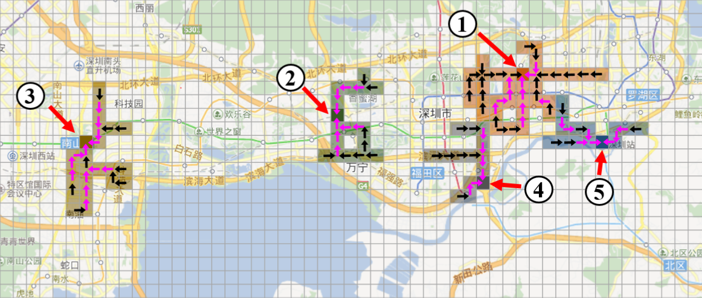
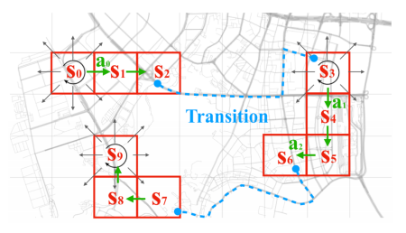
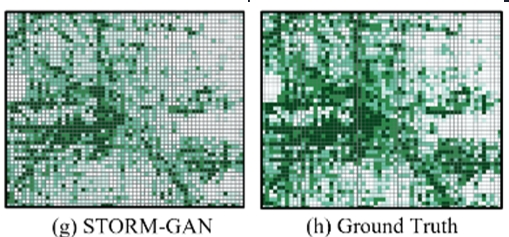
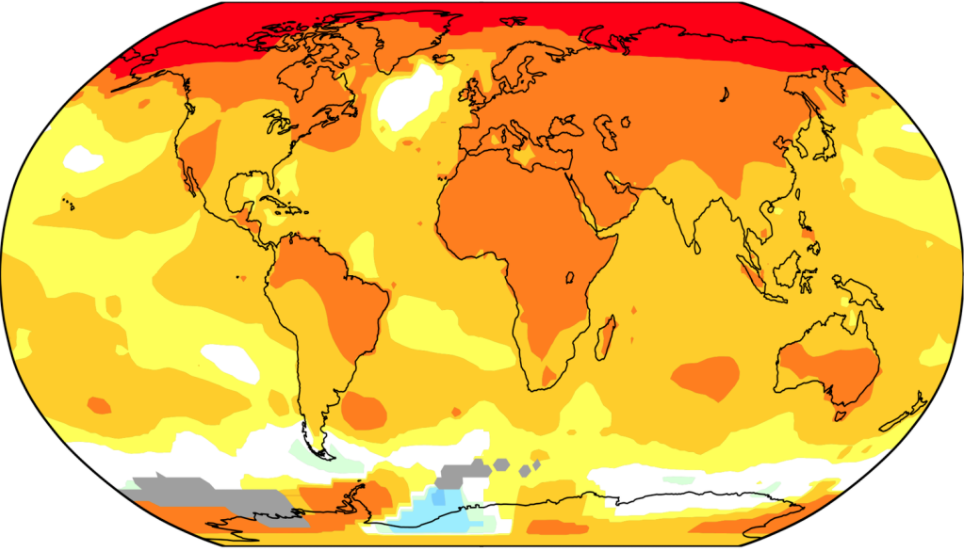

Research Summary
We design novel data mining, machine learning and AI techniques to solve spatio-temporal big data analytics problems related to smart cities, public safety, sustainability and business. Spatio-temporal Big Data (STBD) refers to the data with location and time information, in addition to its unprecedented volume, variety, velocity and veracity (4V's). With the development of sensing and communication technologies, STBD has been generated and consumed widely in urban life. Examples of STBD include (but not limited to) detailed GPS trajectories of taxis and shared bikes, traffic accidents and crime records, global climate observations and simulation results, etc. STBD analytics extracts valuable information, knowledge, and patterns from the data, which could benefit a wide range of users such as urban planners, public safety stakeholders, and decision makers.
STBD Analytics for Urban Intelligence and Smart Cities
Urban Event Footprint Analytics
Intelligent Taxi Operation & Driver Behavior Analysis

Urban Traffic & Mobility Estimation

Big events such as gathering of crowds for sports games, celebrations, or protests may lead to significant traffic congestion and public safety concerns (e.g., stampede). Many events have incomplete or non-public schedules, or even totally unplanned. Previous data mining and machine learning methods only detect simple events with coarse spatial information, e.g., protests in a city or a region. In our work, we design a few new machine learning methods to early detect and forecast dynamic and complex events such as "gathering" and "dispersal" using large-scale mobility data. In particular, we discover the spatio-temporal "footprints" of the events, including their emerging spatial structures, time periods, associated traffic volume, etc. These detailed information can effectively assist city administrators to better manage urban traffic and safety in case of unexpected events.
Related Publications: [SIGSPATIAL'16][SIGSPATIAL'17][AAAI'19][TIST'17][TKDE'19][TIST'21]Taxi drivers traditionally cruise on the roads to seek passengers based on their experiences. This process is inefficient from both transportation and business perspectives. With the help of large-scale urban taxi trip data, we propose a few different data-driven methods to improve the business practices of taxi services. For example, we recommend best passenger-seeking strategies to drivers through solving a Markov Decision Process (MDP) problem using Reinforcement Learning (RL). We also design efficient and fair dispatching strategies for fleet managers. In addition, we use inverse reinforcement learning and initiation learning methods to investigate the behaviors of taxi drivers, such as how they make seeking decisions, how they learn to drive more efficiently, and how they respond to various traffic conditions. Such knowledge facilitates the understanding of the human learning processes and supports behavioral studies.
Related Publications: [CIKM'16][TBD'18][SDM'19][ICDM'19][TIST'19][WWW'20][KDD'20][Urbcomp'20][ICDM'20][SIGSPATIAL'20]Estimating urban traffic conditions (e.g., volume, speed, congestion) is an important urban intelligence problem. Urban traffic conditions are affected by many factors, such as weather, population, and constructions. Accurately estimating urban traffic is challenging due to spatial and temporal auto-correlation, heterogeneity, and randomness in the traffic data. Along this line of research, we have developed deep generative adversarial network models (e.g., TrafficGAN, Curb-GAN) that learn from historical traffic data to generate accurate urban traffic maps and time-lapses under varying travel demand levels. We also explore how traffic congestions propagate along the road network, and how they can be predicted algorithmically.
We also develop generative models for COVID-19 intervention policies evaluation (e.g., COVID-GAN, STORM-GAN) through urban mobility pattern estimation. Our developed model can generate more accurate and faithful data distribution under various COVID-19 related policies compared to SOTA methods (at the time of publication).
Related Publications: [IWCTS'18][ICDM'19][KDD'20][TBD'20][ICDM'20][SIGSPATIAL'20[TIST'21]][ICDM'22][KAIS'23]STBD Analytics for Public Safety
Traffic Accident Prediction and Road Safety Analysis
Traffic accident has been a major public safety concern globally. Large numbers of fatalities and injuries are caused by motor vehicle crashes (MVC) every year. Learning patterns of crashes and predicting future crash hotspots is of great importance to police, highway administrators, and individual drivers. One of the challenges for crash prediction is to scale to large and heterogeneous regions (e.g., mix of urban and rural areas). In our work we proposed Hetero-ConvLSTM, a deep learning framework that incorporates spatial heterogeneity into the learning process for state-level traffic accident prediction.
Another problem we work on is understanding the behaviors of cyclists through learning from their trip record data. We use deep learning methods to model and forecast cyclists' responses to various road environments, and generate insights on how to keep them safe. This is a joint project with the University of Iowa College of Public Health and supported by the SAFER-SIM UTC.
STBD Analytics for Sustainability
Spatio-temporal Change Footprint Pattern Discovery

Geographic Classification and Remote Sensing Image Analysis
Global climate and environmental change has been identified as a top challenge faced by the human society by the United Nations. Monitoring, tracking, and understanding the change processes from climate and environmental observational data is a crucial research task. Previous change detection techniques were desgined by various scientific domains such as statistics, remote sensing, signal processing, etc., and are lacking systematic connections. We, for the the first time in the literature, classify and organize these techniques based on the spatio-temporal coverage of the change processes they detect, and formulate this general problem as a new data mining task, namely, “change footprint pattern discovery”. Following this formulation, we design computationally efficient algorithms to discover one-dimensional change intervals and spatio-temporal (3D) persistent change windows from massive land cover image data. We also explore parallel (CUDA) and distributed (Hadoop) implementations to scale up these algorithms.
Related Publications: [SIGSPATIAL'11][BigSpatial'13][DMKD'14][ISPRS Annals'15][TIST'19]Other relevant work related to sustainability include spatial decision tree learning for land cover classification, resolution sensitivity analysis of remote sensing images, and air quality prediction through machine learning.
Related Publications: [GIScience'12][ICDM'13][TKDE'14][BDCC'17]Other Topics
STBD Analytics + Health Informatics
STBD Management and Query Processing
Business Location Choice
- Estimating urban mobility responses to COVID-19 interventions.
- Learning geographic features for colorectal cancel survival prediction.
- Temporal analysis of online health community user behaviors.
Our research also include efficient algorithms and index structures for the processing of analytical queries on urban STBD, such as the traversal trajectory aggregate queries and the spatio-temporal reachability queries, which are key building blocks of urban intelligent systems.
Related Publications: [SSTD'11][Geoinformatica'13][TBD'18][TKDE'19]Brand co-location analysis and location-based business strategies.
Related Publications: [DS'18]